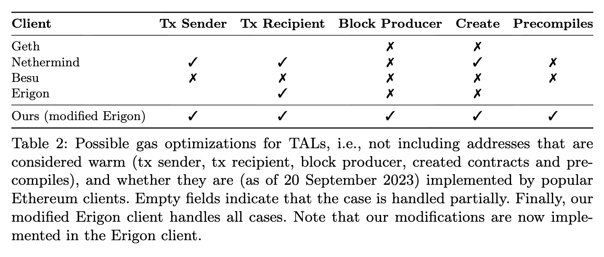

Lioba Heimbach, Quentin Kniep, Yann Vonlanthen, Roger Wattenhofer, Patrick Züst
FC 2024
Ethereum introduced Transaction Access Lists (TALs) in 2020 to optimize gas costs during transaction execution. In this work, we present a comprehensive analysis of TALs in Ethereum, focusing on adoption, quality, and gas savings. Analyzing a full month of mainnet data with 31,954,474 transactions, we found that only 1.46% of transactions included a TAL, even though 42.6% of transactions would have benefited from it. On average, access lists can save around 0.29% of gas costs, equivalent to approximately 3,450 ETH (roughly US$ 5 Mio) per year. However, 19.6% of TALs included by transactions contained imperfections, causing almost 11.8% of transactions to pay more gas with TAL than without. We find that these inaccuracies are caused by the unknown state at the time of the TAL computation as well as imperfect TAL computations provided by all major Ethereum clients. We thus compare the gas savings when calculating the TAL at the beginning of the block vs. calculating it on the correct state, to find that the unknown state is a major source of TAL inaccuracies. Finally, we implement an ideal TAL computation for the Erigon client to highlight the cost of these flawed implementations.

@article{heimbach2023DissectingThe,
author = {Lioba Heimbach and Q. Kniep and Yann Vonlanthen and Roger Wattenhofer and Patrick Züst},
title = {Dissecting the EIP-2930 Optional Access Lists},
year = {2023}
}